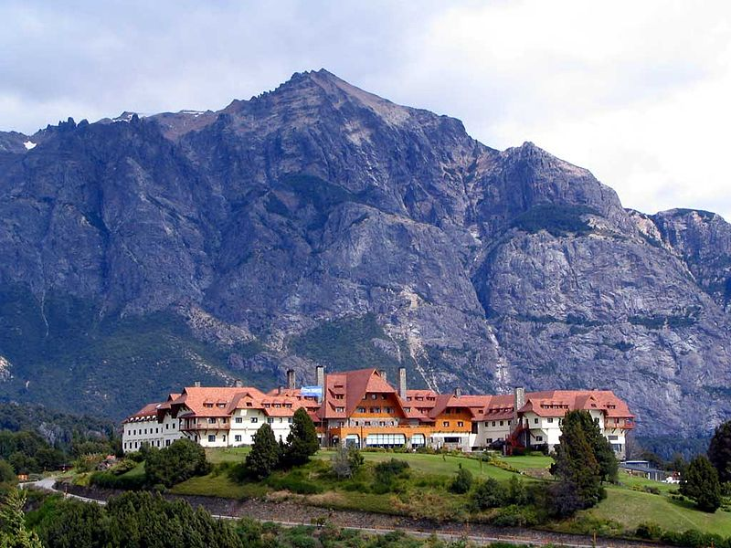
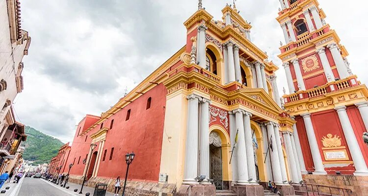
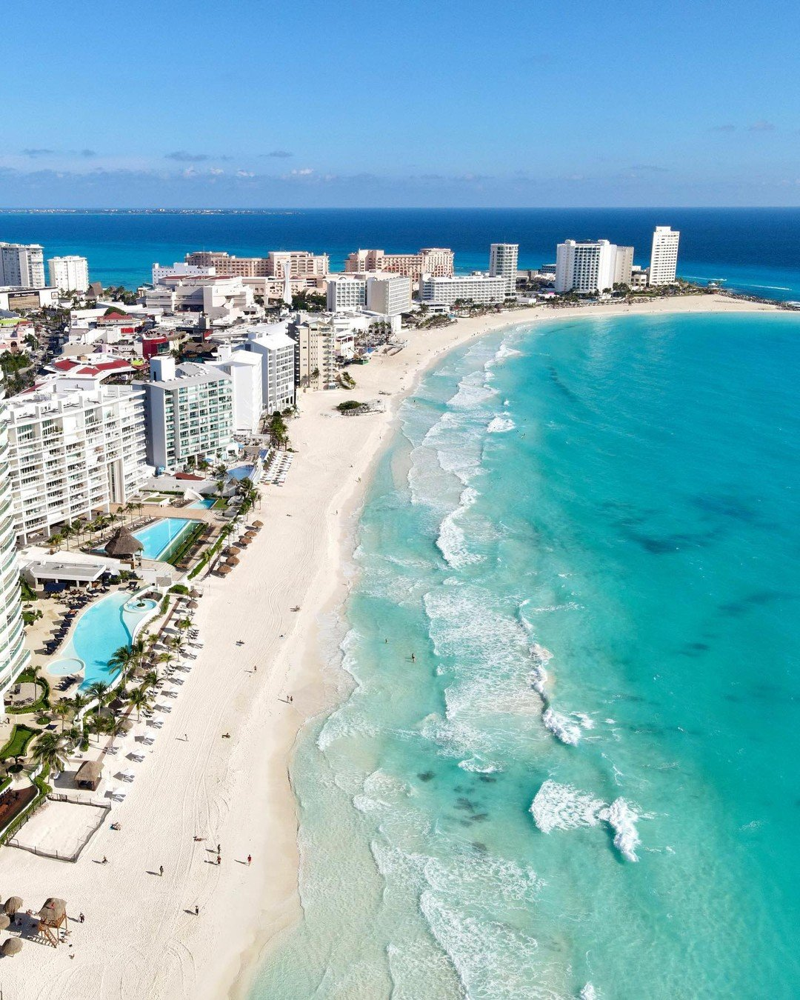

Bariloche

Vigencia: 17/10/2022 al 30/12/2022
Salidas en OCTUBRE, NOVIEMBRE y DICIEMBRE de 2022 ||04 Días|03 Noches
Descripción:
Viajá a Bariloche y abonalo en 18 cuotas fijas de $3.175 por persona, según la promoción vigente.
Promoción no valida para utilizar en findes de semana largos.
El valor de Cuota Fija Mensual indicado en la presente publicación, aplica para Programa Ahora12 con todas las Tarjetas
de crédito bancarias emitidas en Argentina.
Tarifas expresadas en pesos argentinos exclusivamente para pasajeros argentinos y/o residentes. Los precios de los
servicios están cotizados en base habitación doble por persona, salvo que se indique lo contrario. Los precios no
resultan válidos para feriados y/o fines de semana largos, en su caso, consulte. La oferta es válida hasta agotar stock.
Incluye:
Pasajes Aéreos Buenos Aires /Bariloche/Buenos Aires volando con Jet Smart con 01 equipaje de mano .No incluye equipaje en bodega
Traslados aeropuerto / hotel / aeropuerto
Hotel NAHUEL HUAPI 3* según la promoción disponible.
03 noches de alojamiento Habitación standard con desayuno incluido
Información del Viaje:
Recordá que tenemos la mejor Financiación
Consultá también por otros paquetes en 6, y 12 Cuotas FIJAS con todas las tarjetas adheridas al Programa Ahora12
OPERADOR RESPONSABLE : AMICHI
Salta

Vigencia: 17/10/2022 al 30/12/2022
Salidas en OCTUBRE, NOVIEMBRE y DICIEMBRE de 2022 ||04 Días|03 Noches
Descripción:
Viajá a Salta y abonalo en 18 cuotas fijas de $2.330 por persona, según promoción vigente.
El valor de Cuota Fija Mensual indicado, aplica para Programa Ahora18 con todas las Tarjetas de crédito bancarias emitidas en Argentina.
Consulta por planes Ahora 6 y Ahora 12
Tarifas expresadas en pesos argentinos exclusivamente para pasajeros argentinos y/o residentes. Los precios de los
servicios están cotizados en base habitación doble por persona, salvo que se indique lo contrario. Los precios no
resultan válidos para feriados y/o fines de semana largos, en su caso, consulte. La oferta es válida hasta agotar stock.
Incluye:
Pasajes Aéreos Buenos Aires /Salta/ Buenos Aires volando con Jet Smart con 01 equipaje en cabina hasta 10 kilos -
Consultar por el equipaje en bodega.
Traslado aeropuerto / hotel / aeropuerto
Hotel AMERIAN SALTA 4*
3 noches de alojamiento Habitación standard con desayuno incluido
Información del viaje:
Recorda que tenemos la mejor Financiación
Consultá también por 6 y 12 Cuotas FIJAS con todas las tarjetas adheridas al Programa Ahora12
**PROGRAMA NO VALIDO PARA FINES DE SEMANA LARGOS**
OPERADOR RESPONSABLE : AMICHI
Iguazú
Vigencia: 17/10/2022 al 30/12/2022
Salidas en OCTUBRE, NOVIEMBRE y DICIEMBRE de 2022 ||04 Días|03 Noches
Descripción:
Viajá a Iguazú y abonalo en 12 cuotas fijas de $6.340 por persona, según promoción vigente.
Promoción no valida para fin de semana largo.
El valor de Cuota Fija Mensual indicado, aplica para Programa Ahora 18 con todas las Tarjetas de crédito bancarias
emitidas en Argentina.
Consulta por planes Ahora 6 y Ahora 12
Tarifas expresadas en pesos argentinos exclusivamente para pasajeros argentinos y/o residentes. Los precios de los
servicios están cotizados en base habitación doble por persona, salvo que se indique lo contrario. Los precios no
resultan válidos para feriados y/o fines de semana largos, en su caso, consulte. La oferta es válida hasta agotar stock.
Incluye:
Pasajes Aéreos Buenos Aires/Puerto Iguazú/Buenos Aires Volando con Jet Smart con 01 equipaje de mano hasta 10 kilos - NO
INCLUYE EQUIPAJE EN BODEGA (CONSULTAR)
Traslado aeropuerto/ hotel /aeropuerto
Hotel 4* Guaminí Misión
03 noches de alojamiento Habitación standard con desayuno incluido.
Excursión Cataratas Argentinas(No incluye entrada al Parque Nacional)
Información del viaje:
Recorda que tenemos la mejor Financiación
Consultá también por los Planes Ahora 6 Y 12 para Cuotas FIJAS con todas las tarjetas adheridas al Programa Ahora12.
OPERADOR RESPONSABLE : AMICHI
Cancún

Vigencia:
26/10/2022 al 15/12/2022
Salida 07 de DICIEMBRE de 2022 ||08 días|07 Noches
Descripción:
Los precios publicados son POR PERSONA en base habitación DOBLE( salvo que se indique lo contrario) en pesos
equivalentes a dólares americanos al tipo de cambio del día 26 de Octubre de 2022 ( 161.50 pesos = 1 dólar americano) .
Incluye impuestos aéreos, IVA .Incluyen impuesto país del 30% y percepción del 45% (RG AFIP 5232/2022 ) y del 25% ( RG
AFIP 5272/2022).Oferta válida hasta agotar stock.
Para el caso de pasajeros que paguen sus servicios mediante depósito bancario, se deberá adicionar la percepción RG
3819. (salvo que se indique lo contrario).
Incluye:
CANCUN- 07 NOCHES DESDE $ 585.245 Pesos
Pasaje aéreo de COPA AIRLINES BUENOS AIRES /CANCÚN/BUENOS AIRES
01 Equipaje en cabina por persona , en clase económica.
Traslados de llegada y salida al aeropuerto de Cancún en servicio regular
07 noches de alojamiento con Todo Incluido HOTEL OASIS PALM
Asistencia al viajero.
El precio de la oferta NO incluye:
- Percepción del 5% por pago en efectivo si correspondiera (Resolución General AFIP 3819)
Información del Viaje:
Consultar por otros destinos.
TARIFA SUJETA A DISPONIBILIDAD Y CAMBIOS SIN PREVIO AVISO.
Los paquetes incluyen Aéreos con COPA AIRLINES en clase turista (incluye 1 equipaje de mano en cabina por persona),
cantidad de noches de alojamiento según se especifica en cada caso, traslado, asistencia al viajero con cobertura de
hasta usd 65.000 en destino, para pasajeros con edad de hasta 70 años cumplidos.
OPERADOR RESPONSABLE: BON VOYAGE VIAJES
Turquía

Vigencia:
12/04/2022 al 24/10/2022
Salidas desde ABRIL a OCTUBRE de 2022 ||13 Días|12 Noches
¡¡EXPERIENCIAS INOLVIDABLES!!
Descripción:
Visitá Turquía por 13 días / 11 noches desde USD 2.745 por persona !!!
SUPER TARIFA PARA VISITAR LA TIERRA DE LAS ANTIGUAS CIVILIZACIONES !!
SALIDAS:
- 12 DE ABRIL/ 10 MAYO / 14 JUNIO /12 JULIO /04 OCTUBRE 2.022 - USD 2.745 POR PASAJERO. Impuesto PAIS + Percepción AFIP
RG 4815 Terrestre informativo: USD 352.
- 9 DE AGOSTO - USD 2.855 POR PASAJERO. Impuesto PAIS + Percepción AFIP RG 4815 Terrestre informativo USD 352.
- 06 DE SEPTIEMBRE - USD 3.045 POR PASAJERO. Impuesto PAIS + Percepción AFIP RG 4815 Terrestre informativo USD 352.
Todas las salidas incluyen: Impuestos aéreos, IVA, Impuesto PAIS del 30% y percepción del 35% RG 4815 AFIP del pasaje
aéreo.
Los precios publicados están cotizados en base habitación doble -salvo que se indique lo contrario-, en pesos
equivalentes a dólares americanos al tipo de cambio del día 24 de Febrero de 2022 (112.50 pesos =1 dólar americano).
Incluye impuesto país y percepción AFIP RG 4815. Oferta válida hasta agotar stock por cada programa o hasta
que el BNA modifique el tipo de cambio de la referencia, lo que ocurra primero. Para el caso de pasajeros que paguen sus
servicios mediante depósito bancario, se deberá adicionar la percepción RG 3825.
Operador Responsable: JULIÁ TOURS
Incluye:
Pasaje aéreo desde Buenos Aires volando con TURKISH AIRLINES en clase económica
Alojamiento en Hoteles Céntricos de PRIMERA CATEGORÍA
05 noches de alojamiento en Estambul con desayuno
06 noches por el Interior de Turquía con Media Pensión (Desayuno y cena)
Visitas con Guía habla Hispana a Ankara, Capadocia, Konya, Pamukkale, Kusadasi (Éfeso), Izmir, Pérgamo y Canakkale (Troya)
Visitas y excursiones (Excepto en Estambul)
Traslados de llegada y de salida en Estambul
Seguro de asistencia en viaje de Universal Assistance ( Consultar condiciones)
No incluye:
Impuesto PAIS (Ley 27.541) sobre los Servicios Terrestres
Percepción del 5% por pago en efectivo si correspondiera (Resolución General AFIP 3819)
Percepción del 35% RG 4815 AFIP sobre los Servicios Terrestres
Información del viaje:
Turquía es un país que se extiende desde Europa oriental hasta Asia occidental, con conexiones culturales con el antiguo
imperio griego, el persa, el romano, el bizantino y el otomano.
La cosmopolita Estambul, en el estrecho del Bósforo, alberga la icónica basílica Santa Sofía con su elevada cúpula y los
mosaicos cristianos, la enorme mezquita Azul del siglo XVII y el palacio Topkapi, de alrededor del año 1460 y que fue
hogar de sultanes. Ankara es la capital moderna de Turquía.
Orlando
Vigencia: 01/12/2022 al 31/12/2023
Duración:
- 06 Días| 05 Noches
- 07 Días| 06 Noches
- 08 Días| 07 Noches
- 09 Días| 08 Noches
- 10 Días| 09 Noches
Consultar por otros tiempos de estadía
Descripción:
Visitá Orlando desde $801.048 por persona, según oferta vigente.
Walt Disney World Resort lleva 50 años transformando cuentos de hadas en realidad. Cuenta con más de 120 atracciones, 50
opciones de entretenimiento y 140 restaurantes en sus 4 Parques Temáticos y 2 Parques Acuáticos.
Un sinfín de diversión que recomendamos vivir en una estadía de varios días, tanto sea aprovechando los beneficios de
alojarse en los hoteles y resorts Walt Disney World Resort; o bien en el área de Orlando.
Todos los paquetes incluyen: Impuestos aéreos, IVA, Impuesto PAIS del 30% y percepción del 35% RG 4815 AFIP del pasaje
aéreo.
Los precios publicados están cotizados en base habitación doble -salvo que se indique lo contrario-, en pesos
equivalentes a dólares americanos al tipo de cambio del día 01 de Diciembre de 2022 (166.02 pesos =1 dólar americano).
Incluye impuesto país y percepción AFIP RG 4815. Oferta válida hasta agotar stock o hasta
que el BNA modifique el tipo de cambio de la referencia, lo que ocurra primero. Para el caso de pasajeros que paguen sus
servicios mediante depósito bancario, se deberá adicionar la percepción RG 3825.
Incluye:
1 entrada por persona por día a uno de los cuatro parques temáticos de Walt Disney World:
Magic Kingdom
Epcot
Disney's Hollywood Studios
Disney's Animal Kingdom
Hotel 3* en la ciudad de Orlando, o bien un hotel 3* dentro de Walt Disney World Resort.
En caso que no haya disponibilidad para la fecha escogida, se va realizar un upgrade a hoteles 4* de Orlando o de Walt Disney World Resort.
Opcional:
1 entrada por persona por día a uno de los dos parques acuáticos de Walt Disney World:
- Disney's Typhoon Lagoon
- Disney's Blizzard Beach
No incluye:
Traslados ni Comidas
OPERADOR RESPONSABLE: BON VOYAGE VIAJES
- 06 Días| 05 Noches
- 07 Días| 06 Noches
- 08 Días| 07 Noches
- 09 Días| 08 Noches
- 10 Días| 09 Noches
- Disney's Typhoon Lagoon
- Disney's Blizzard Beach